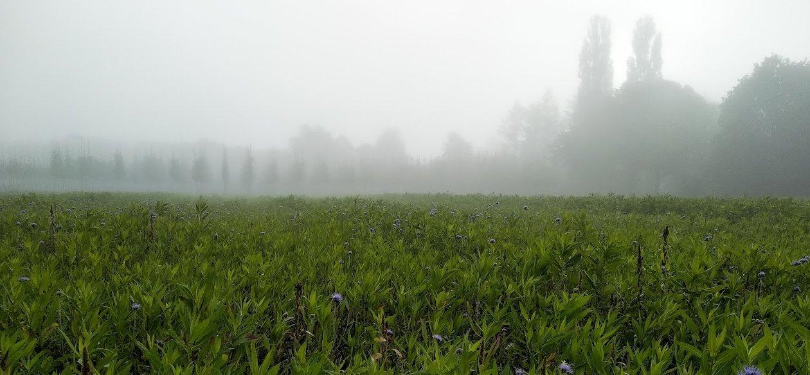
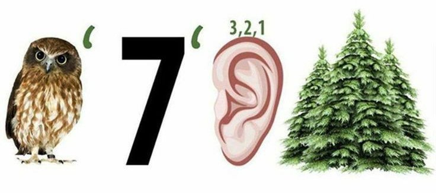
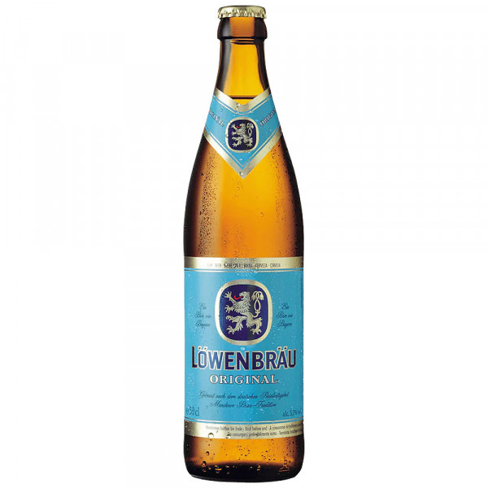

Праиндоевропейский язык
Сюрприз: русский и немецкий языки имеют общего предка, это праиндоевропейский язык.
Русский язык в этой модели происходит от балто-славянской семьи языков, далее славянской,
далее восточнославянской (в отличие от, например, чешского, польского, хорватского, сербского),
далее от древнерусского. Немецкий же язык имеет своими предками: германскую семью языков,
западную подсемью, далее объединение верхненемецких и средненемецких.
Еще больший сюрприз: в обоих языках существует немало слов, в которых угадывается
общий корень -- и это несмотря на то, что распад единого языка на отдельные языки
произошел от 5000 до 2500 лет до н.э.
Посмотрим на эти слова.
Семьи
Во-первых, нашим далеким предкам были важны члены семей.
Мать, сестра, брат, сын, дочь -- все родственные.
Мать -- (die) Mutter [м'уттер].
Сестра -- (die) Schwester [шв'естер].
Брат -- (der) Bruder [бр'удер].
Сын -- (der) Sohn [зон].
Дочь -- (die) Tochter [т'охтер].
Мама -- (die) Mama [м'ама].
Папа -- (der) Papa [п'апа].
Сестра -- (die) Schwester [шв'естер].
Брат -- (der) Bruder [бр'удер].
Сын -- (der) Sohn [зон].
Дочь -- (die) Tochter [т'охтер].
Мама -- (die) Mama [м'ама].
Папа -- (der) Papa [п'апа].
История с отцом сложнее и непонятнее. Согласно основной версии,
"отец" происходит от протоиндоевропейского atta, что значило не то
родитель, не то сестра матери; а немецкое Vater -- от другого
праиндоевропейского слова, через латинское pater. Если сильно прищуриться,
можно попытаться разглядеть "vater" в слове "отец" (окруженная гласными t),
но, вероятно, это не научно, да и нам особо не помогает.
Зато мы можем найти "Vater" в других знакомых словах: всё, что начинается с
"патр-", прежде всего "патриарх": тут и значение достаточно близко.
В похожем смысле используется "патрон" (покровитель) -- тоже (der) Patron.
И, кстати, "патрон" в значении оружейного патрона также идентично:
(der) Patrone.
Или вот "патриот". С одной стороны, тот же корень, что у "Vater".
С другой стороны, "патриот" происходит непосредственно от
"патрия", точнее "терра патрия" -- земля отцов, родина отцов.
В немецком слово для "родины" образуется похожим образом:
Mutterland/Vaterland. Не то земля отцов/матерей, не то
земля-мать или земля-отец. А, и кстати, русское слово "патриот"
заимствовано из немецкого, от слова "Patriot".
Также немецкие дети, как и русские, используют слова Mama (Мама) и Papa (Папа),
со звучанием и ударением, идентичным русскому. Скорее всего, это универсальные слова,
сформированные из первых звуков, которые произносит ребенок.
Природа
Солнце -- (die) Sonne [з'онне].
Месяц (светило) -- (der) Mond [монд].
Месяц (период) -- (der) Monat [м'онат].
Луч -- (der) Strahl [штраль].
Свет -- (der) Licht [лихт].
Месяц (светило) -- (der) Mond [монд].
Месяц (период) -- (der) Monat [м'онат].
Луч -- (der) Strahl [штраль].
Свет -- (der) Licht [лихт].
Слово "луна", или "месяц", звучит по-немецки как Mond.
Хотя, как по мне, это созвучно "луне", на самом деле родственное слово
именно "месяц": русское и немецкое слова оба происходят от общего
праиндоевропейского корня *me(n)s. По-русски получился месяц, а
по-немецки Mond (небесное светило) и Monat (календарный месяц).
Слово же "луна", похоже, происходит от того же корня, что и
"луч" -- и немецкое Licht, то есть "свет".
Мерить -- messen [м'ессэн].
Любопытно, что, похоже, корень для обозначения месяца в праиндоевропейском
языке был связан с корнем для слова "мерить" -- возможно, потому, что
основным применением наблюдения за месяцем было измерение времени.
Итак, можем записать родственные "мерить" по-русски и
"messen" по-немецки.
Мера -- (die) Maß [мас].
Прут -- (der) Stab [штаб].
Масштаб -- (der) Maßstab [масшт'аб].
Прут -- (der) Stab [штаб].
Масштаб -- (der) Maßstab [масшт'аб].
Ну и раз уж заговорили об этом, то вспоминается и родственное слово
"масштаб", которое пришло в русский уже из немецкого: Maßstab,
буквально это склейка из Maß -- мера, размер -- и Stab -- палка.
То есть изначально масштаб -- это просто палка для измерения.
Когда мы смотрим на карту, составленную две или три сотни лет назад,
очень редко мы находим те дома, к которым мы привыкли. Очень часто,
с другой стороны, мы находим элементы ландшафта: реки, холмы, овраги.
Где-то между этими двумя находится элемент, который, казалось бы,
было бы очень легко поменять, и тем не менее, очень часто он остается
неизменным несколько сотен лет: улицы, дороги. Не странно ли:
это не что-то, что нужно строить или разрушать -- на этом месте, наоборот,
ничего нет. Тем не менее, многие современные нам улицы имеют многовековую
историю -- в отличие от стоящих и стоявших на них домов.
Аналогичным в лингвистике, науке о языке, является предположение, известное как
гипотеза Сапира-Уорфа: упрощенно, оно заключается в том, что язык определяет
наше мышление. Язык как бы предоставляет дорогу для мышления, и в этом смысле
не так удивительно то, что такие казалось бы эфемерные вещи, как слова,
сохраняются в языках тысячи лет, особенно если вещи, описываемые ими,
являются основными, базовыми, важными в нашей жизни как тогда, так и сейчас.
Вода -- (das) Wasser [в'ассэр].
Это относится к большинству слов в этом разделе. Например,
неудивительно, что такая базовая вещь, как вода, имела слово для
обозначения в праиндоевропейском. Неудивительно, что это слово
перешло в производные языки.
Wasser -- это почти как английское water, w ↔ в, a ↔ о, t ↔ д,
итого вода -- Wasser.
Молоко -- (die) Milch [мильх].
Другая базовая жидкость -- молоко, и тут тоже есть общий корень: молоко
и Milch восходят к праиндоевропейскому *h₂melǵ-. Правда, история чуть
запутаннее, чем с водой: сам этот корень изначально означал не молоко,
а глагол "доить" -- и в этом смысле он действительно очень древний
и распространен по всей индоевропейской семье (сравните латинское mulgeo,
греческое amelgein, "доить"). А вот существительное для самого молока
каждая ветвь в итоге образовала по-своему: у римлян получилось "lac",
у греков -- "gala", а вот у германцев и славян -- одно и то же слово,
как в свое время с лососем и дроздом: общее для этой пары языковых семей
расширение старого глагольного корня в существительное, не унаследованное
с самого начала, а появившееся чуть позже, но зато на двоих.
Соль -- (das) Salz [зальц].
Еще одна вещь, без которой хозяйство не обходилось ни тогда, ни сейчас --
соль. Соль и Salz -- родня, восходящая к праиндоевропейскому
корню *seh₂l-, "соль". Тот же корень -- в латинском sāl (отсюда французское
sel, испанское sal, итальянское sale), в греческом ἅλς ("халс") и в
английском salt.
А через латынь этот же корень вернулся в русский еще несколькими окольными
путями: "салат" (от herba salata, "соленая трава" -- зелень когда-то
заготавливали в рассоле), "соус" (из того же salsa, "соленая"), а заодно
"сальса" и "салями". Сюда же английское salary, "жалованье": от латинского
salārium -- содержания, которое римскому солдату выдавали не то солью,
не то деньгами на нее.
Салат -- (der) Salat [зал'ат].
"Салат", кстати, и в русский, и в немецкий, и в английский попал из одного
места: через итальянское insalata и французское salade -- но в конечном
счете все от той же латинской соли. Причем в немецком Salat -- это не только
блюдо, но и сам латук на грядке: и "лист салата", и "кочан салата" -- через
одно и то же слово. А английское coleslaw, капустный салат, прячет тот же
корень еще глубже: оно из голландского koolsla -- kool ("капуста") плюс sla,
обрезок от того же salade.
Сахар -- (der) Zucker [ц'укер].
А вот сахар и Zucker -- уже не общий корень, а параллельное заимствование,
как в свое время лев с тигром: оба слова -- одно "бродячее слово", которое
расползлось по Европе из общего источника. В самом начале цепочки --
санскритское śarkarā, что буквально значило "песок, крошка, гравий"
(сахар-сырец и правда похож на грубый песок); дальше через персидский
и арабский (sukkar) оно попало в средневековую латынь и итальянский
(zucchero), откуда -- в немецкий Zucker и английский sugar. В русский же
"сахар" пришел раньше и другим путем -- через греческое σάκχαρον
("саккхарон") и латинское saccharum.
Сеять -- säen [з'эен].
Семя -- (der) Same ['замэ].
Семя -- (der) Same ['замэ].
Раз уж заговорили про сельское хозяйство: сеять и säen, семя и Same
(чаще встречается форма множественного числа, Samen) -- тоже родня,
восходящая к общему праиндоевропейскому корню *seh₁-, "сеять". Тот же
корень -- в латинском serere/semen и в английских native seed и sow
(тоже "сеять"). А заодно и семантика совпала до мелочей: что в русском,
что в немецком (Same/Samen) слово для "семени" растения используется
и в физиологическом смысле, ровно как латинское semen.
Кстати, эту же родню часто по ошибке расширяют и на слово "семья" --
созвучие уж больно заманчивое, так и просится красивая версия вроде
"семья -- это те, кто из одного семени". Увы, похоже, что это не так:
"семья", по всей видимости, происходит от другого корня, означавшего
скорее "домочадцы" (родственно литовскому šeima, готскому haims,
"селение") -- красивое, но, судя по всему, случайное созвучие.
Зерно -- (das) Korn [корн].
Зерно и Korn -- тоже родня, из той же аграрной темы: оба восходят
к праиндоевропейскому *ǵr̥h₂-no-, буквально что-то вроде "стёртое,
перетёртое" -- от глагольного корня со значением "стареть, изнашиваться,
созревать". Тот же корень -- в латинском granum (отсюда и "гранула",
и "гранит"), и в английских corn и grain. Corn в британском варианте чаще
значит "зерно" вообще, в американском сузилось до "кукурузы".
Рожь -- (der) Roggen [р'огген].
Раз уж речь про зерно: рожь и Roggen -- тоже родня, и опять по знакомому
сценарию. Как лосось с Lachs, дрозд с Drossel и молоко с Milch, это слово
общее только для балто-славянских и германских языков (сравните литовское
rugys, английское rye из древнеанглийского ryge) -- северный злак, о котором
южные индоевропейцы толком не знали: у римлян для ржи было свое, ничем не
связанное слово secale. Надежного праиндоевропейского корня тут нет -- скорее
общее достояние тех, кто реально сеял рожь на севере Европы, возможно даже
подхваченное у какого-то доиндоевропейского населения.
Хлеб (готское) -- hlaifs [хлайфс].
Буханка -- (der) Laib [ляйп].
Буханка -- (der) Laib [ляйп].
А готовый хлеб -- слово и вовсе с германской родословной. "Хлеб",
по основной версии, -- раннее заимствование из германского, скорее всего
из готского hlaifs, "хлеб" (как в свое время осёл или короб): вместе
с самим словом славяне, вероятно, переняли у германцев и способ выпечки --
плотный хлеб определенной формы, который пекут крупным куском и режут
ломтями. Тот же корень -- в древнеанглийском hlāf, откуда современное
английское loaf, и в немецком Laib -- только Laib сузился до значения
"каравай, буханка как форма", а обычный хлеб по-немецки теперь Brot.
У английского hlāf потомство, кстати, самое неожиданное. "Хлебным
сторожем", hlāfweard, называли главу дома -- и из этого стянулось слово
lord; а hlǣfdige, "та, что месит хлеб", -- нынешнее lady. Так что и
"лорд", и "леди" -- буквально про хлеб.
Огород, сад -- (der) Garten [г'артен].
Детский сад -- (der) Kindergarten [к'индергартен].
Пояс -- (der) Gürtel [г'юртель].
Ремень -- (der) Riemen [р'имен].
Детский сад -- (der) Kindergarten [к'индергартен].
Пояс -- (der) Gürtel [г'юртель].
Ремень -- (der) Riemen [р'имен].
"Огород" и "город" -- если вдуматься, одно и то же слово, и оба --
родня немецкому Garten. Все они восходят к праиндоевропейскому
*ǵʰortos, "огороженное место". Исходный смысл -- именно "то, что обнесено оградой":
"огород" остался при огороженном участке под грядки, а "город"
пошел вверх по значению -- обнесенное частоколом поселение, крепость,
а там и просто город. "Городить", "ограда", "изгородь", "жердь"
(то, из чего городят) -- все оттуда же.
Немецкое Garten удержалось где-то посередине -- это "сад, огород".
Тот же корень -- в английском yard ("двор") и garden, в готском gards
("дом"), в скандинавском garðr (отсюда мифические Асгард и Мидгард --
"ограды" богов и людей). Из латыни сюда же hortus, "сад" (отсюда же --
цветок гортензия: назван в честь некой Гортензии, а само имя Hortensia --
латинское "садовая"), и cohors -- сначала "огороженный двор", потом
"отряд, когорта"; через французский из cohors вышло и court -- "двор"
уже в смысле королевского.
А самое узнаваемое -- Kindergarten, русский перевод
"детский сад" -- близкая калька с немецкого.
К этому же кусту -- немецкое Gürtel, "пояс": корень тот же, только
смысл не "огородить участок", а "опоясать, обхватить". "Гурт" в значении "гонимое стадо"
и наречие "гуртом" ("скопом, оптом") только притворяются родственниками его брату (der) Gurt:
их возводят к другому, лишь похожему немецкому слову -- Hürde,
"плетеный загон", а там корень "плести", а не "опоясывать".
Но когда слышишь по-немецки Gurt, почему-то сразу ясно, о чем идет речь -- о
поясе или ремне.
Слово "ремень" тоже с немецким двойником -- Riemen ("ремень,
кожаная лента"): может, "ремень" -- старое заимствование из германского,
ну или какое-то другое родство. Ремешок -- Riemchen. Гарантирую, что поймете
Riemchensandalen: сандали на ремешках. Sandalenriemchen -- сами ремешки на сандалях на ремешках.
Про ремень на штанах сейчас практически не говорят Riemen, раньше говорили. В Баварии и Австрии и сейчас поймут.
В этом значении слово осталось в выражении "sich am Riemen reißen".
"Reiß dich am Riemen!" -- то есть "дерни себя за ремень" -- это вместо нашего "соберись, тряпка!"
Возьми себя в руки, так сказать.
Бутерброд
Бутерброд -- (das) Butterbrot [б'уттэрброт].
Масло -- (die) Butter [б'уттэр].
Хлеб -- (das) Brot [брот].
Масло -- (die) Butter [б'уттэр].
Хлеб -- (das) Brot [брот].
Раз уж всплыл Brot, нельзя пройти мимо "бутерброда" -- слова,
заимствованного из немецкого целиком, вместе с обоими корнями:
Butterbrot, буквально "хлеб с маслом" (Butter -- масло, Brot -- хлеб).
С праиндоевропейскими древностями тут связи никакой: Butter пришло
в германские языки из латинского butyrum (а туда -- из греческого
boutyron), а Brot -- сравнительно молодое германское слово, родственное
глаголу "варить, бродить" (тот же корень, что в английском brew и в нашем
"брожении"). Русские "масло" и "хлеб" с ними никак не перекликаются.
Зато как мнемоника "бутерброд" бесценен: одно знакомое с детства слово --
и сразу два немецких, Butter и Brot. А заодно и напоминание, что значения
слегка разъехались: немецкий Butterbrot -- это действительно ломоть хлеба
с маслом, а русский "бутерброд" давно уже любой: и с колбасой, и с сыром,
и с чем угодно. Можно без масла.
Ночь -- (die) Nacht [нахт].
День -- (der) Tag [таг].
День -- (der) Tag [таг].
Ночь и Nacht восходят к общему праиндоевропейскому корню.
Можно было бы ожидать чего-то аналогичного и для слов, обозначающих день:
хоть Tag и не очень похож на "день", нужно помнить, что в Tag "t" мутировало
из "d", а "g" из "y"/"j". Ну а слово "day" (день по-английски), родственное
слову "Tag", уже звучит намного намного похоже на "день". Но вся эта
конструкция нами выстроена напрасно с точки зрения происхождения:
даже "day" и "день" происходят от разных корней.
Веять -- wehen [в'еэн].
Ветер -- (der) Wind [винд].
Погода -- (das) Wetter [в'эттэр].
Ветер -- (der) Wind [винд].
Погода -- (das) Wetter [в'эттэр].
По всей видимости, веять и wehen родственны; также,
"веять" родственен "ветру", а "Wind" -- "wehen".
Связан ли "ветер" c "Wetter" (погода), я не разобрался,
но для запоминания нам подойдет: ветер, явление погоды,
которая Wetter.
Стон, стонать -- stöhnen [штёнэн].
Стон и stöhnen тоже родственны -- восходят к праиндоевропейскому *(s)tenh₂-,
"греметь, стонать, издавать протяжный гул". Любопытно, что у этого же корня
есть и "безэсовый" вариант, без начального s-: именно от него произошли
латинское tonare, "греметь", и, через него, английские astonish и stun
("оглушать" -- в изначальном смысле, громким звуком), а также немецкое
Donner и английское thunder, "гром". То есть стон человека и удар грома
когда-то были, по сути, одним и тем же словом -- просто про разный по силе шум.
Холодный -- kalt [кальт].
Общий предок "холодный" и "kalt" -- праиндоевропейский корень *gel ("холодный", "замораживать").
В принципе, в "х, о, л, д" угадываются "k, a, l, t".
Снег -- (der) Schnee [шн'эе].
Где холод, там и снег: праиндоевропейский корень *sniegwh-.
Пример, где слово прошло тысячелетия, пережило
целые народы, и почти не изменилось. Русское "сн" сродни немецкому "шн";
"ег", особенно произнесенный с "гаком", и будет "ee".
Туман -- (der) Nebel [н'эбель].
Небо -- (der) Himmel [х'иммель].
Небо -- (der) Himmel [х'иммель].
Интересный случай: в русском язке корень *nebh- стал небом,
а в немецком --
"туманом".
"Himmel" приведен для полноты картины, так-то вроде аналогов в русском нет, и близко это слово будет только тем, кто смотрел "Der Himmel über Berlin" Вима Вендерса. Кстати, неплохой фильм для просмотра тем, кто учит немецкий.

Städtische Baumschule München, 2020
Немецкий тут не одинок:
в английском "nebula" используется в значении космической туманности,
типа как "туманность Андромеды"."Himmel" приведен для полноты картины, так-то вроде аналогов в русском нет, и близко это слово будет только тем, кто смотрел "Der Himmel über Berlin" Вима Вендерса. Кстати, неплохой фильм для просмотра тем, кто учит немецкий.
Рдеть -- röten [р'ётен].
Красный -- rot [рот].
Ржавчина -- (der) Rost [рост].
Красный -- rot [рот].
Ржавчина -- (der) Rost [рост].
"Рдеть" -- "краснеть, светиться красным" -- и немецкое rot восходят
к одному и тому же праиндоевропейскому корню для красного цвета, *h₁rewdʰ-.
Это один из самых надежно реконструируемых цветов во всей индоевропейской
семье (сравните латинское ruber и греческое erythros -- отсюда, кстати,
"эритроциты", красные кровяные тельца). У этого же корня в русском есть
и другие родственники: "ржавый" (ржавчина ведь тоже красноватая -- и
немецкое Rost того же происхождения, что и rot) и "рыжий".
Из праславянского идет и другое слово для красного, оставшееся в виде
разговорного, народного: "рудый". Оттуда же "руда", что не лишено логики:
болотная железная руда, которую в древности добывали на территории будущей
Руси, действительно ржаво-красного цвета. Впоследствии стало означать
металлическую руду вообще.
Говорят, в отличие от предков немецкого и русского языков, в латынь этот корень
приехал как "ruber", и от него возникли и "рубин"/"Rubin".
Красный рот и rot -- ложные друзья переводчика. Ну а для нас -- нормальные полноценные
друзья: запоминается же :)
Жёлтый -- gelb [гельб].
Золото -- (das) Gold [гольд].
Золото -- (das) Gold [гольд].
А вот у "жёлтого" немецкая родня как раз есть, и с ней даже интереснее,
чем с красным: "жёлтый" и gelb восходят к общему праиндоевропейскому
корню *ǵʰelh₃-, "желтый, зеленый, блестящий" -- еще один из самых надежно
реконструируемых цветов во всей индоевропейской семье (тот же корень --
в греческом khloros, "бледно-зеленый", откуда "хлорофилл" и "хлор").
И, как с "рдеть", у этого корня и в русском, и в немецком нашлись
дальние родственники, причем парой. "Золото" и "Gold" -- оба от того же
корня: золото, если вдуматься, и правда буквально "желтый металл",
и оба языка, что приятно, назвали его в честь одного и того же цвета.
Да и нет
Не -- ni- [ни].
Нет -- nein [найн].
Не, ни -- nicht [нихт].
Нет -- nein [найн].
Не, ни -- nicht [нихт].
Есть вещи еще более базовые, чем родственники или явления природы --
например, отрицание. Русская частица "не" и немецкая "ni-" (та, что прячется
в nein и nicht) восходят к одному и тому же праиндоевропейскому отрицанию *ne.
Служебные слова вроде отрицаний и союзов вообще меняются куда медленнее,
чем существительные, и потому нередко переживают даже те слова, которые
когда-то помогали им образовываться.
При этом "нет" и "nein"/"nicht" -- не то чтобы буквально одно и то же слово,
а скорее одна и та же идея, собранная из похожих деталей. Русское "нет"
исторически -- это "не" + "есть", то есть буквально "не имеется". Немецкое
nein -- это "ni" + "ein", буквально "не один", "ни одного". А nicht восходит
к "ni" + "wiht" -- "не вещь", "ничего" (то же самое устройство, кстати,
и у английского "not", которое тоже когда-то было "ne" + "awiht").
Если вам доводилось слышать баварский или австрийский немецкий, то могли слышать
короткое "ned" (иногда "net") вместо "nicht" -- это не отдельное слово,
а просто диалектная стяжка того же nicht, распространенная на юге
немецкоязычного ареала. Нам нравится: один-в-один "нет".
Соблазнительно причислить сюда и "нищий" -- мол, нищий это тот,
у кого "ничего" (nichts). Но корень, похоже, не тот: "нищий" восходит не
к отрицанию *ne, а к предлогу *ni, "вниз" (тот же, что в "низ",
"низкий", "ниц", "ничком", "никнуть"). Буквально нищий -- скорее
"приниженный, поверженный", чем "тот, у кого ничего". Правда,
обе праосновы, *ne "не" и *ni "вниз", в глубине, возможно, родня --
так что интуиция не совсем врет.
Уничтожить -- vernichten [фэрн'ихтен].
А вот настоящая параллель с *ne -- в глаголах "уничтожить"
и vernichten. Оба собраны по одному рецепту: взять слово для "ничто"
(русское "ничто", немецкое nichts) и сделать из него глагол "свести
к ничему".
Похожее украинское "знищено" построено чуть иначе -- на "нищити"
(от "нищий"): не "обратить в ничто", а скорее "разорить дотла".
Три языка, три оттенка одной идеи.
Да -- ja [я].
Тот, то -- der/das [дэр/дас].
Там -- da, dort [да, дорт].
Тот, то -- der/das [дэр/дас].
Там -- da, dort [да, дорт].
А вот тут -- отличный ложный друг переводчика. Русское "да" и немецкое "da"
выглядят и звучат как одно и то же слово, но означают совершенно разное:
русское "да" -- это утверждение, "yes" (по-немецки -- отдельное слово, ja
[я]), а немецкое "da" -- это "там" или "тут", в зависимости от контекста.
Настоящая же родня немецкого da (и dort, "вон там") -- это русские указательные
"тот", "то", "там": все они восходят к общему праиндоевропейскому указательному
корню *to-/*so-, тому же, что и в английском "that" и в немецком артикле der/das.
А есть еще doch -- так по-немецки отрицают отрицание. Например, кто-то спрашивает:
"Ты же не придешь?" -- или утверждает: "он не пришел!" Чтобы оспорить это, в немецком
используют "doch", буквально что-то вроде
"все-таки да!" Мне нравится созвучие с русским "да", хотя, наверное, источник и разный.
Есть (кушать) -- essen [эссен].
Есть (иметься) -- ist [ист].
Есть (иметься) -- ist [ист].
А вот и настоящий сюрприз: русское "есть" -- это на самом деле два разных
слова, случайно слившихся по звучанию, и у обоих находится немецкая родня.
"Есть" в смысле "кушать" восходит к праиндоевропейскому *h₁ed-, "есть,
поглощать пищу" -- тот же корень в немецком essen, латинском edere (отсюда
"съедобный", edible) и английском eat. А "есть" в смысле "имеется"
(как в "у меня есть книга") -- это форма от глагола "быть", восходящая
к совсем другому, не менее древнему корню, *h₁es-, "быть" -- тот же корень
в немецком ist, латинском est, английском is.
Какать -- kacken [к'акен].
Писать (в туалет) -- pissen [п'иссен].
Писать (в туалет) -- pissen [п'иссен].
"Какать" и kacken -- как ни странно, самая настоящая
праиндоевропейская родня, восходящая к корню *kakka-, "испражняться".
В отличие от "мама"/"папа" (которые, скорее всего, каждый язык изобрел
заново, из первых звуков младенца), это слово действительно унаследовано:
тот же корень -- в латинском cacare, греческом kakke.
Детсадовское слово, а по лингвистическому возрасту -- одно из самых
почтенных на этой странице.
А вот с "писать" (в смысле сходить в туалет)
история другая. "Писать" и pissen, скорее всего, не унаследованы от общего
праиндоевропейского предка, а разошлись по средневековой Европе как одно
бродячее звукоподражательное слово -- сравните и французское pisser,
и английское piss: считается, что в основе лежит просто подражание звуку.
Забавная симметрия получается: "какать" роднит нас через тысячи лет,
а "писать" -- всего через несколько веков и пол-Европы.
Сосать -- saugen [з'ауген].
Посасывать (диал.) -- zuzeln [ц'уцельн].
Посасывать (диал.) -- zuzeln [ц'уцельн].
"Сосать" и "saugen" -- тоже родня, восходят к общему праиндоевропейскому
корню *seuk-/*sū-, "сосать". Тот же корень -- в английском suck и,
по всей видимости, в латинском sugere (откуда и suction). Кстати,
возможно, сюда же относится и русское "сок" -- что было бы вполне логично
(сок ведь как раз то, что сосут), хотя тут у лингвистов единого мнения нет.
В австрийском и баварском диалектах для того же действия, только
неспешного и с удовольствием -- будь то леденец, соломинка или мамина
грудь -- есть отдельное уменьшительно-ласкательное словечко: zuzeln.
Прямое ли это родство с saugen и тем же праиндоевропейским корнем или
самостоятельное звукоподражательно-ласкательное образование (что вероятнее),
сказать сложно -- но по звучанию, с этим настойчивым "цц", оно явно
просится в ту же компанию.
Тянуть -- dehnen [д'эйнен].
Тонкий -- dünn [дюнн].
Тонкий -- dünn [дюнн].
"Тянуть" и "dehnen" -- родня, восходящая к одному из самых
продуктивных праиндоевропейских корней, *ten-.
Тот же корень -- в латинском tendere (откуда "тенденция", английское "extend").
Тот же корень объясняет и "тонкий"/"dünn" в обоих языках: тонкое -- это то, что растянуто.
Слабый -- schlaff [шлаф].
Спать -- schlafen [шл'афен].
Спать -- schlafen [шл'афен].
На первый взгляд, "слабый" и schlafen ("спать") -- случайное созвучие,
при чем тут сон? Но нет, похоже, тут самое настоящее (хоть и не бесспорное)
родство: оба восходят к праиндоевропейскому корню *sleb(h)-, "быть вялым,
обмякшим, слабым". Причем у немецкого для "слабого" есть соответствие
даже точнее, чем schlafen, -- прилагательное schlaff, "вялый, дряблый,
слабый", практически один в один. А глагол schlafen, "спать" -- судя
по всему, то же самое слово, просто сузившееся по смыслу: сон как
состояние, в которое тело "обмякает".
С русскими "спать" и "сон" слово "schlafen" в плане происхождения не связано.
Сидеть -- sitzen [з'итцен].
Седло -- (der) Sattel [з'аттель].
Сиденье -- (der) Sitz [зитц].
Седло -- (der) Sattel [з'аттель].
Сиденье -- (der) Sitz [зитц].
А "сидеть" и sitzen -- родня безо всяких оговорок: оба от
праиндоевропейского *sed-, "сидеть", одного из самых надежных
и плодовитых глагольных корней во всей семье. Тот же корень -- в
латинском sedere: отсюда "сессия", "резиденция", "президент"
(буквально "сидящий впереди"), "диссидент" ("сидящий наособицу").
Он же в греческом hedra, "сиденье, грань" -- отсюда "кафедра"
(буквально "седалище") и школьные "тетраэдр" с "додекаэдром", --
и в английском sit.
У этого корня и в русском родня побольше, чем кажется, просто хорошо
замаскированная. "Сесть", "садить", "сад" (место, куда сажают),
"сосед" -- буквально "тот, кто сидит рядом" (со- + -сед). И даже
"беседа": сперва это "сидение снаружи", перед домом, -- разговор,
который ведут, рассевшись у ворот.
Седло и Sattel -- тоже сюда: буквально "то, на чем сидят". Тут,
правда, спорят -- то ли это независимые образования от общего *sed-,
то ли славянское "седло" -- раннее заимствование из германского;
так или иначе, корень один, и он же в латинском sella, "стул"
(из *sed-la; отсюда же, по одной из версий, и "седан"). А совсем
неожиданно с тем же корнем связаны "гнездо", немецкое Nest
и английское nest: праформа *ni-sd-os -- это "ni" ("вниз") плюс
все та же основа *sed-, то есть "место, куда садятся". Латинское
nidus, "гнездо", -- оттуда же.
Лежать -- liegen [л'иген].
Класть, положить -- legen [л'еген].
Лагерь, склад -- (das) Lager [л'агер].
Закон -- (das) Gesetz [гез'этц].
Класть, положить -- legen [л'еген].
Лагерь, склад -- (das) Lager [л'агер].
Закон -- (das) Gesetz [гез'этц].
Продолжим про позы. "Лежать" с liegen -- родня, от
праиндоевропейского *legʰ-, "лежать, ложиться". Пара к нему --
legen, "класть" (ровно как русские "лечь" и "положить" или английские
lie и lay). Тот же корень -- в латинском lectus, "ложе", и в греческом
lekhos того же значения.
Русская родня разбросана по множеству слов: "лечь", "ложе",
"ложиться", "залог", "предлог", "прилежный" (буквально "приложивший
себя к делу"). И то самое "логово" из "берлоги" (см. про медведя
выше) -- тоже отсюда: логово -- это место, где зверь лежит.
А еще от этого корня в русский вернулось заимствование -- "лагерь",
из немецкого Lager, "стоянка, склад": буквально "место, где
укладываются" (то же Lager, "отлежавшееся" пиво, дало сорт "лагер").
Забавно вышло и с "законом": англичане собрали свой law из "того,
что положено" (скандинавское lag, "уложенное"), а немцы -- свое
Gesetz из "того, что установлено" (setzen, тот самый корень *sed-
из абзаца выше). Один смысл -- две позы.
Стоять -- stehen [шт'еен].
Ставить, помещать -- stellen [шт'еллен].
Место, позиция -- (die) Stelle [шт'елле].
Ставить, помещать -- stellen [шт'еллен].
Место, позиция -- (die) Stelle [шт'елле].
И, чтобы закрыть тему поз: "стоять" и stehen -- родня, от
праиндоевропейского *steh₂-, "стоять", пожалуй, самого несокрушимого
глагольного корня во всей семье. Причем складывается красивая тройка:
как "сидеть -- садить" и "лежать -- ложить", так и "стоять -- ставить";
ровно та же пара и в немецком -- stehen и stellen ("ставить,
помещать"). Быть в позе -- и поставить в позу.
От латинского stare -- целый ворох знакомых слов: "стабильный",
"статус", "статуя", "константа", "дистанция", "субстанция",
"инстанция", "стенд" (через английское stand). От греческого histemi,
stasis -- "стазис", "система" и "экстаз" (буквально "стояние вне
себя"). Даже "этаж" отсюда -- через французское etage, а то от
латинского "стояния", уровня, на котором что-то стоит.
Русская родня -- "стать", "ставить", "стан", "стойло", "устав",
"постоянный", "состояние", "простой" (когда все стоит). И самое
неожиданное: "-стан" в названиях стран -- Казахстан, Пакистан,
Афганистан -- это то же самое "стоять, стоянка, место", просто
пришедшее из иранских языков, где корень *steh₂- дал слово для
"места, страны". Так что "стан" в "стане врага" и "-стан"
в "Дагестане" -- родственники.
Хочется предположить, что "идти" и gehen -- тоже родня: оба про хождение,
и звучат отчасти похоже. Увы, похоже, что нет. "Идти" в самом деле восходит
к одному из самых надежных праиндоевропейских глагольных корней, *h₁ey-,
"идти" -- он же в латинском ire/eo (отсюда и "экзит", и "транзит",
и "маршрут" через itinerarium), в греческом eimi, в литовском eiti.
А вот немецкое gehen с этим корнем не связано: происхождение самого gehen
остается довольно темным, а его прошедшая форма "ging" и вовсе восходит
к отдельному германскому корню *ǵʰengʰ-, "шагать" (тот же, что в английском
"gang" в устаревшем смысле "ход, шествие", а не "банда").
Неожиданный след того самого *h₁ey- в германских языках все же есть --
просто не в современном немецком. В готском, самом раннем засвидетельствованном
германском языке, глагол "идти" был устроен супплетивно: настоящее время шло
от корня *ǵʰengʰ- (gaggan), а вот прошедшее, iddja ("шел"), -- как раз
от *h₁ey-. То есть корень когда-то был и в германских языках, просто до
современного немецкого не дожил.
Короб, коробка -- (der) Korb [корб].
Короб (и коробка) и Korb -- тоже родня, только не унаследованная,
а результат параллельного заимствования -- как в свое время лев с тигром
или карп: оба восходят к латинскому corbis, "корзина". Причем в русский
слово, судя по всему, попало не прямо из латыни, а через германские
языки -- еще один случай, когда немецкий поучаствовал в судьбе русского
слова если не впрямую, то через родственный готский, как в свое время
с ослом. И кстати, исходное значение обоих слов -- именно "плетеная
корзина", а не обязательно картонный ящик, как сейчас чаще всего
представляется "коробка".
Короткий -- kurz [курц].
А вот с "коротким" и kurz (уже знакомым нам по "курцхаару") -- история
похожая на коробку с Korb, только на слой сложнее. Русское "короткий" --
слово исконное, восходит прямиком к праиндоевропейскому корню *(s)ker-,
"резать" (нечто отрезанное -- значит, укороченное). Немецкое же kurz --
позднее заимствование из латинского curtus, "укороченный" (родственного,
кстати, и русскому "куцый", и английскому curt, curtail). Но и сама
латинская curtus, по всей видимости, восходит к тому же корню *(s)ker-.
То есть kurz и "короткий" все же родня -- просто одно унаследовано
напрямую, а другое вернулось окольным путем через латынь. А прямой,
неодолженный германский родственник "короткого" в немецком когда-то
был, но не сохранился -- зато он есть в английском: это short.
Тело
Части тела -- еще одна категория слов настолько же базовых, насколько
и семья, а значит, и настолько же устойчивых.
Нос -- (die) Nase [н'азэ].
Бровь -- (die) Braue [бр'ауэ].
Сердце -- (das) Herz [херц].
Око (уст.) -- (das) Auge ['ауге].
Ухо -- (das) Ohr [ор].
Бровь -- (die) Braue [бр'ауэ].
Сердце -- (das) Herz [херц].
Око (уст.) -- (das) Auge ['ауге].
Ухо -- (das) Ohr [ор].
Начнем с самого узнаваемого: нос и Nase -- родня, восходящая
к праиндоевропейскому корню *nas-, одному из самых широко распространенных
и легко узнаваемых на слух во всей семье (сравните и латинское nasus,
и английское nose).
Бровь и Braue -- тоже родня, от корня *bʰruH-.
"Сердце" и "Herz" -- праиндоевропейский корень *ḱḗr/*ḱr̥d-. Он же --
в латинском cor/cordis (отсюда "кардиология" через греческое kardia,
а заодно и "мужество", courage, -- в средневековых европейских языках
смелость помещали именно в сердце), и в английском heart.
Современное русское "глаз" немецкому "Auge" не родня,
зато у него есть старший брат, которого оно со временем вытеснило:
"око" (уже архаичное, но узнаваемое по выражению
"око за око" или по слову "окулист"), вот оно с немецким самая настоящая родня:
оба восходят к древнему корню *h₃ekʷ-.
Тот же корень в латинском oculus.
Говорят, "ухо" и "Ohr" восходят к общему корню *h₂ows-.
Как по мне, слова непохожи настолько, что нам их родство ничем не поможет.
Может только тем, что там и там по три буквы.

Верить
"Вера" и "верить" -- хороший пример того, как исходное значение слова
смещается со временем, а корень остается на виду. Восходят они
к праиндоевропейскому корню *weh₁ro-, "истинный, заслуживающий доверия" --
и в этом смысле изначально были куда ближе к слову "правда", чем
к современной "религиозной вере".
Истинный, верный -- wahr [вар].
Правда, истина -- (die) Wahrheit [в'архайт].
Правда, истина -- (die) Wahrheit [в'архайт].
Тот же корень -- в немецком wahr, "истинный, верный", и Wahrheit,
"правда, истина" (буквально Wahrheit -- это wahr плюс суффикс "-heit",
вроде русского "-ость": получается что-то вроде "истинность"). И тот же
корень -- в латинском verus, "истинный", откуда и veritas, "истина"
(а заодно и все русские слова с "вери-": "верификация", "достоверный" --
тоже из этой семьи, хоть и заимствованные). Английское very ("очень")
тоже отсюда -- когда-то оно значило именно "истинный, самый настоящий"
(сравните "the very truth", "сама истина"), и лишь потом сместилось
в сторону усилительной частицы.
Новый -- neu [ной].
Новый и neu -- еще один из самых надежных и широко распространенных
праиндоевропейских корней, *newos, "новый". Он же -- в латинском novus
(откуда "новелла", "инновация", "новичок"), в греческом neos (откуда
"неон" -- буквально "новый газ", один из последних открытых), в английском
new, в литовском naujas. Слово, пожалуй, можно назвать самым старым
по возрасту среди всех "новых" на этой странице.
Ключ
Ключ -- (der) Schlüssel [шл'юссель].
Ключ и Schlüssel -- родня, восходящая к праиндоевропейскому корню
*kleh₂u-, "крюк, кол, затычка" (тот же корень -- и в русских "крюке"
и "клюке", расшатанной палке с изогнутым концом). А в латыни этот же
корень дал clavis, "ключ", и claudere, "закрывать" -- отсюда и английские
close, clause, include, exclude.
И "клавиша" из этой же семьи, просто добралась до русского
другим путем и заметно позже: через французское clavier, "клавиатура",
и, видимо, польское klawisz, но в конце концов -- все та же латинская
clavis. То же французское clavier дало и немецкое Klavier -- только
это уже не "клавиша", а целое "пианино", "клавир" по-старому.
Море
Море -- (das) Meer [меер].
Болото, топь -- (das) Moor [моор].
Болото, топь -- (das) Moor [моор].
Море и Meer -- родня, восходящая к праиндоевропейскому *móri, "море,
озеро" -- один из самых надежных водных корней индоевропейской семьи
(тот же корень -- в латинском mare, в ирландском muir, в английском
архаичном mere, "озеро"). Тот же корень дал и немецкое Moor,
"болото, топь": вода та же, просто со временем измельчала и заросла.
"Морось" и "моросить", похоже, тоже из этой семьи -- славянское
расширение того же водного корня в сторону мелкого, моросящего дождя
(сюда же, возможно, и диалектные "марь", "мга", туман). Прямого
немецкого слова с тем же корнем для мороси, впрочем, нет: "морось"
по-немецки -- Nieselregen, совсем другого происхождения.
Топь, трясина -- (der) Morast [мор'аст].
Morast -- родня, хоть и добралась до немецкого окольным путем.
Германский корень *mari- (тот же, что в Meer) в свое время попал
в народную латынь как mariscus, "болотистый", оттуда во французский
как marais, "болото" -- и уже из французского вернулся обратно
в немецкий как Morast. Заодно это и родственник английского marsh,
которое до Франции и обратно не ездило, а осталось прямым потомком
того же германского *mari-.
Мох -- (das) Moos [моос].
Moos -- тоже родня, причем одна из самых узнаваемых на слух
пар на странице: мох и Moos. Тот же корень -- в латинском muscus
("мох", откуда и "мускус") и в английском moss. Вполне возможно, что
и этот корень в конечном счете восходит к тому же древнему "водному"
гнезду, что и море с Moor: сначала вода, потом топь, потом то, что на
топи вырастает.
Животные
Волк -- (der) Wolf [вольф].
Мышь -- (die) Maus [маус].
Свинья -- (die) Schwein [швайн].
Гусь -- (die) Gans [ганс].
Выдра -- (der) Otter ['оттэр].
Лев -- (der) Löwe ['лёвэ].
Тигр -- (der) Tiger ['тигэр].
Берлога -- (die) Bärenhöhle [б'эрен-хёле].
Осёл -- (der) Esel ['эзель].
Кот -- (der) Kater [к'атэр].
Оса -- (die) Wespe [в'эспэ].
Бобёр -- (der) Biber [б'ибэр].
Ёж -- (der) Igel ['игель].
Мышь -- (die) Maus [маус].
Свинья -- (die) Schwein [швайн].
Гусь -- (die) Gans [ганс].
Выдра -- (der) Otter ['оттэр].
Лев -- (der) Löwe ['лёвэ].
Тигр -- (der) Tiger ['тигэр].
Берлога -- (die) Bärenhöhle [б'эрен-хёле].
Осёл -- (der) Esel ['эзель].
Кот -- (der) Kater [к'атэр].
Оса -- (die) Wespe [в'эспэ].
Бобёр -- (der) Biber [б'ибэр].
Ёж -- (der) Igel ['игель].
Волк и Wolf, а также мышь и Maus -- одни из самых надежно реконструируемых
праиндоевропейских слов: корни *wĺ̥kʷos и *muh₂s дошли почти без искажений
до подавляющего большинства индоевропейских языков (сравните хотя бы английские
wolf и mouse). А "волк" и "Wolf" вместе можно встретить и в одном словосочетании:
"степной волк" -- это прямая калька немецкого Steppenwolf, среди прочего,
заглавие знаменитого романа Германа Гессе.
Интереснее со свиньей и Schwein. Тут родство не только в корне, но и в самом
способе образования слова. И "свинья", и "Schwein" изначально были
прилагательными -- "тот, что относится к свинье" -- образованными от общего
корня *suH- (того же, что в латинском sus и английском sow) с помощью одного
и того же суффикса -in-. То есть оба слова буквально значили что-то вроде
"свинское [животное]", а со временем это прилагательное вытеснило исходное
слово для самого животного -- причем в обоих языках одинаково.
А вот со львом и тигром интереснее по другой причине: несмотря на внешнее
сходство, "лев"/"Löwe" и "тигр"/"Tiger" -- это не общие праиндоевропейские
корни, а параллельные заимствования в обоих языках из одного источника,
через латынь и греческий (а тигр, судя по всему, восходит еще дальше --
к какому-то восточному, возможно иранскому, слову). Оно и неудивительно:
ни львы, ни тигры не водились там, где жили далекие предки русских и немцев,
так что взяться общему исконному слову для них было попросту неоткуда.
Слово "Löwe" наверняка на слуху у любого, кто знаком с немецким
пивом: Löwenbräu ("Львиная пивоварня") -- одна из старейших и известнейших
пивоварен Мюнхена, чей лев красуется на этикетках и по сей день.

Бутылка пива Löwenbräu с логотипом пивоварни
Медведя среди родственных слов нет не просто так: и русское "медведь",
и немецкое "Bär" -- это не унаследованные, а придуманные слова, причем оба --
результат одного и того же древнего суеверия. Исходное праиндоевропейское слово
для медведя (от него происходят латинское ursus и греческое arktos -- то самое,
что в "Арктике", "земле под созвездием Медведицы") в северных языках вышло
из употребления: считалось, что называть страшного лесного зверя его настоящим
именем -- к беде, вот и придумывали замену. По-русски получилось "медведь",
то есть "поедатель мёда", а по-немецки -- "Bär", предположительно от корня
со значением "бурый". Любопытно, что старое слово для медведя, "бер",
все же не пропало совсем -- по распространенной (хотя и оспариваемой
лингвистами) версии, оно сохранилось окаменевшим осколком именно в слове
"берлога": бера + логово, то есть "медвежье логово". Так что, вполне возможно,
в берлоге прячется тот же корень, что и в немецком Bär.
Осёл, как в свое время лев с тигром, домашним животным для севера Европы
был не родным -- его завезли туда уже в историческое время, вместе со словом.
И русское "осёл", и немецкое "Esel" восходят к латинскому asinus (точнее,
к его уменьшительной форме asellus) -- при этом в славянские языки слово,
судя по всему, попало не прямо из латыни, а через готский, то есть опять же
через германский язык. Так что тут немецкий поучаствовал, можно сказать, дважды.
Похожая история и с котом: домашняя кошка распространилась по Европе вместе
с Римом, а с ней -- позднелатинское cattus, давшее и русское "кот",
и немецкое Katze/Kater. Причем соответствие тут даже точнее, чем кажется:
русское "кот" обозначает именно самца, а не кошку вообще -- и в немецком
для этого же понятия существует отдельное слово, Kater, а не общее Katze.
А вот оса и Wespe, как и бобёр и Biber, -- уже не заимствования, а настоящее
родство: оба восходят к праиндоевропейским корням, дошедшим почти без изменений
до большинства индоевропейских языков (сравните латинское vespa и английское
wasp для осы, английское beaver для бобра). Кстати, "бобёр", похоже,
родственен тому же корню "бурый", что и медведь с берлогой чуть выше:
слово, судя по всему, буквально значило что-то вроде "бурый-бурый" --
то есть тоже описательное название по цвету, только образованное повтором
корня, а не заменой слова целиком, как у медведя.
Бурый -- braun [браун].
А раз уж корень "бурый" всплыл дважды -- в медведе и в бобре -- стоит
упомянуть и само слово "бурый": оно, похоже, тоже в родне, и напрямую
соответствует немецкому braun. Тут когда-то были сомнения (некоторые
лингвисты предполагали, что "бурый" -- тюркское заимствование), но
балтийские параллели -- литовское bėras, прусское boaris, "гнедой,
каштановый (о масти коня)" -- говорят скорее в пользу общего,
унаследованного корня, а не позднего заимствования.
Говорят, Ёж и Igel -- тоже пара родственных слов:
оба восходят к общему праиндоевропейскому корню *h₁eǵʰi- (тот же корень,
кстати, виден в греческом ekhinos -- отсюда и "морской ёж", и "эхинацея").
Но звучит настолько по-разному, что запоминанию не помогает. Зато
слово "Igel" напоминает про ежиные иглы.
Змея
Змея -- (die) Schlange [шл'ангэ].
Шланг -- (der) Schlauch [шлаух].
Очередь -- (die) Schlange [шл'ангэ].
Шланг -- (der) Schlauch [шлаух].
Очередь -- (die) Schlange [шл'ангэ].
Змея и Schlange -- не родня, общего корня тут нет. Немецкое Schlange --
от глагола schlingen, "виться, обвивать, петлять" (родственно английским
sling и slink), то есть буквально "та, что извивается". А русская "змея",
похоже, из той же истории, что медведь с берлогой выше: это слово-табу.
Настоящее праиндоевропейское имя змеи избегали произносить вслух и заменили
описательным -- "змея", по основной версии, родственна слову "земля"
и значит что-то вроде "земная", "та, что по земле". Тот же ход, что
и с медведем -- "поедателем мёда".
В немецком Schlange, кроме
собственно змеи, издавна означало и гибкую трубку, кишку -- по форме, --
и слово перекочевало в русский именно в этом значении как шланг. В современном же
немецком садовый шланг чаще Schlauch. А еще Schlange -- это "очередь":
"Schlange stehen" -- "стоять в очереди", буквально "стоять змеёй".
Стоять -- змеёй. Идти -- гуськом. Что подводит нас к тому, что...
...гусь и Gans тоже родственны и восходят к общему корню *ǵʰh₂éns -- причем
оба слова сохранили начальный согласный, в отличие, например, от латинского
anser, где он потерялся. А выдра и Otter родственны корню *wódr̥ -- тому же,
что дал слово "вода" (и Wasser) выше по тексту: выдра буквально означает
что-то вроде "водного [животного]".
Породы собак
Раз уж заговорили о животных, отдельного упоминания заслуживают названия пород
собак. Тут в русский язык попали уже не отдельные праиндоевропейские корни,
а целиком готовые немецкие слова, причем сравнительно недавно: понятие "порода"
в современном виде -- в основном изобретение девятнадцатого века, и немецкая
кинология сыграла в этом не последнюю роль.
| Русский | Немецкий | Произношение | Дословно |
|---|---|---|---|
| Шнауцер | (der) Schnauzer | [шн'ауцер] | Schnauze -- морда |
| Миттельшнауцер | (der) Mittelschnauzer | [м'иттель-шн'ауцер] | mittel -- средний |
| Ризеншнауцер | (der) Riesenschnauzer | [р'изен-шн'ауцер] | Riese -- великан |
| Цвергшнауцер | (der) Zwergschnauzer | [цв'ерг-шн'ауцер] | Zwerg -- гном, карлик |
| Пудель | (der) Pudel | [п'удель] | pudeln -- плескаться в воде |
| Шпиц | (der) Spitz | [шпиц] | spitz -- острый, остроконечный |
| Такса | (der) Dachshund | [д'акс-хунт] | Dachs -- барсук, Hund -- собака |
| Курцхаар | (der) Kurzhaar | [к'урцхаар] | kurz -- короткий, Haar -- волос(ы) |
| Дратхаар | (der) Drahthaar | [др'атхаар] | Draht -- проволока, Haar -- волос(ы) |
| Лангхаар | (der) Langhaar | [л'ангхаар] | lang -- длинный, Haar -- волос(ы) |
| Ротвейлер | (der) Rottweiler | [р'оттвайлер] | от города Rottweil |
| Доберман | (der) Dobermann | [д'обэрман] | от фамилии заводчика |
Все три шнауцера -- по сути одно и то же слово с разными приставками-размерами.
"Schnauzer" сам по себе образован от Schnauze -- "морда", "усатая морда" -- порода
и правда легко узнается по характерной бороде и усам. А дальше все просто:
mittel -- "средний" (тот же корень, что в "миттельшпиль"), riesen -- "великанский"
(от Riese, "великан"), zwerg -- "гномий", "карликовый". Выучив одно слово
Schnauzer, заодно выучиваешь и три немецких прилагательных для размера.
Пудель -- от немецкого диалектного pudeln, "плескаться, барахтаться в воде"
(родственно английскому puddle, "лужа"): порода изначально выводилась как
подружейная собака для охоты на водоплавающую дичь. А шпиц назван просто
по внешнему виду -- spitz значит "острый, остроконечный", про торчащие уши
и заостренную мордочку. Тот же корень, кстати, виден и в русском "шпиль" --
остроконечная башенка, тоже в конечном счете от Spitze, "острие".
А такса -- это по-немецки не Taxe (хотя и такое слово есть, но у него другое
значение, "такса" в смысле "тариф"), а Dachshund, буквально "барсучья собака":
Dachs -- барсук, Hund -- собака. Название говорит само за себя: таксу выводили
специально для охоты на барсуков и других норных зверей -- отсюда и вытянутое
тело, и короткие лапы, удобные для того, чтобы пробираться по норе. При этом
русское "барсук", в отличие от многих слов из предыдущих разделов, немецкому
Dachs не родственно вовсе -- это заимствование из тюркских языков.
Курцхаар, дратхаар и лангхаар устроены по тому же принципу, что и шнауцеры:
общая часть -- Haar, "волосы", а меняется только приставка, описывающая тип
шерсти: kurz -- "короткий", draht -- буквально "проволока" (то есть жесткая,
проволочная шерсть), lang -- "длинный". Казалось бы, раз "волос" так похоже
звучит, тут тоже должен быть общий праиндоевропейский корень -- но нет,
это случайное созвучие: Haar восходит к одному корню, а "волос", похоже,
все-таки родственно немецкому Wolle, "шерсть" -- и, кстати, английскому wool,
которое значит то же самое.
| Русский | Немецкий | Произношение | Дословно |
|---|---|---|---|
| Волос | (die) Wolle | [в'олле] | шерсть; общий корень с англ. wool |
Ротвейлер назван не по какому-то качеству собаки, а просто по названию города
Rottweil, откуда порода родом (rot -- "красный", по красной черепице
на месте раскопок древнеримского поселения).
Ну а доберман -- пример того, что не любое немецкое название породы что-то
значит. Это просто фамилия: Карл Фридрих Луис Доберман, сборщик налогов
и живодер из Тюрингии, в свободное время выводивший породу собаки понадежнее
для защиты в своих не самых безопасных разъездах.
Рыбы и морские животные
Раз уж мы плавно перешли от собак к остальной фауне, заглянем и под воду:
тут тоже найдется и настоящее родство, и параллельные заимствования,
и просто забавные совпадения.
| Русский | Немецкий | Произношение | Дословно / комментарий |
|---|---|---|---|
| Лосось | (der) Lachs | [лакс] | общий праиндоевропейский корень *lax- |
| Карп | (der) Karpfen | [к'арпфен] | общее заимствование, источник неясен |
| Форель | (die) Forelle | [фор'элле] | прямое заимствование из немецкого |
| Устрица | (die) Auster | ['аустэр] | оба -- из лат. ostrea / греч. ostreon |
| Краб | (die) Krabbe | [кр'аббэ] | от krabbeln -- ползать, копошиться |
| Рак (речной) | (der) Krebs | [крепс] | Krebs -- родня Krabbe/краба; "рак" тут не родня, а перевод |
Начнем с самого интересного: лосось и Lachs -- не заимствование, а по-настоящему
общий праиндоевропейский корень *lax-, причем распространенный довольно узко --
в основном в балтийских, славянских и германских языках (сравните литовское
lašiša), а не по всей индоевропейской семье. Считается, что дело в самом лососе:
этот корень, судя по всему, возник у народов, живших там, где лосось действительно
нерестится -- то есть где-то в северной Европе, задолго до расселения
индоевропейцев на юг, где лосося уже не водилось и слово было ни к чему.
С карпом и Karpfen ситуация как с "львом" и "тигром" -- оба слова заимствованы
из одного источника, вот только источник этот в случае карпа установить
не удалось: то ли какой-то дунайский язык, то ли готский. Зато карпа как блюдо
роднит с Германией не только слово: с Средних веков карпов разводили в прудах
при монастырях по всей Европе, и до сих пор во многих немецких (и не только)
семьях карп -- традиционное блюдо рождественского стола.
С форелью и устрицей все проще. Форель -- прямое заимствование из немецкого
Forelle (восходит к древневерхненемецкому forhana). Устрица же и Auster --
не заимствование друг у друга, а параллельные заимствования: оба слова
восходят к латинскому ostrea, которое, в свою очередь, пришло из греческого
ostreon.
А вот с крабом и раком стоит быть аккуратнее. Само слово "краб"
в русском -- сравнительно позднее заимствование германского
происхождения, родственное немецкому Krabbe (от krabbeln, "ползать,
копошиться" -- как и английское crab); сам же Krebs в немецком --
родня Krabbe, то есть "рак" и "краб" по-немецки это, по сути, два
исторических варианта одного корня. А вот русское "рак" -- слово
отдельное, исконное, и убедительных данных о его родстве с Krebs/Krabbe
нет: похоже, это просто случайное совпадение того, что для похожего
существа в обоих языках нашлось слово на "р(к)-".
Птицы
Продолжим орнитологией: тут набор особенно пестрый -- есть настоящее родство,
есть заимствование в неожиданную сторону, есть параллельные заимствования,
есть независимое звукоподражание, а есть и слово, будто бы родившееся
из выкрика немецкого путешественника.
| Русский | Немецкий | Произношение | Дословно / комментарий |
|---|---|---|---|
| Щегол | (der) Stieglitz | [шт'иглиц] | наоборот: заимствовано в немецкий из славянских |
| Дрозд | (die) Drossel | [др'оссель] | общий балто-славяно-германский корень |
| Утка | (die) Ente | ['энтэ] | общий праиндоевропейский корень |
| Журавль | (der) Kranich | [кр'аних] | общий звукоподражательный праиндоевропейский корень |
| Кран | (der) Kran | [кран] | сокращение от Kranich -- по сходству с шеей птицы |
| Кукушка | (der) Kuckuck | [к'уккук] | не родство, а совпавшее звукоподражание |
| Страус | (der) Strauß | [штра'ус] | оба -- из греч. strouthos через латынь |
| Стерх | (der) Storch | [шторх] | по легенде -- от возгласа "Storch!" ("аист!") |
| Орёл | (der) Adler | ['адлер] | не родственно (но см. про город Адлер ниже) |
Начнем с щегла: тут, в кои-то веки, заимствование идет в обратную сторону.
Немецкое Stieglitz само заимствовано из славянских языков (сравните чешское
stehlík, польское szczygieł) -- судя по всему, в основе лежит звукоподражание
крику птицы. То есть на этот раз не немецкий одолжил русскому, а наоборот.
Дрозд и утка -- тоже примеры настоящего родства. Дрозд и Drossel, как и
лосось с Lachs раньше, восходят к общему корню, известному только в балто-славянских
и германских языках. Утка и Ente -- пример корня куда более древнего и
распространенного, *h₂enh₂t-, знакомого едва ли не всей индоевропейской семье
(сравните латинское anas, литовское antis) -- забавно, что при этом английское
duck сюда не относится, это отдельное германское слово со значением "нырять".
Основная версия связывает название "стерх" с немецким словом Storch («аист»).
Считается, что в XVII–XVIII веках в России работали немецкие исследователи природы
(например, Петер Симон Паллас, который впервые научно описал стерха в 1773 году).
Издали белоснежный стерх действительно похож на белого аиста — у птиц схожий облик и
преобладание белого цвета в окраске. Поэтому натуралисты могли принять его за аиста и
подхватить немецкое название. В русском языке слово немного трансформировалось — так и появился «стерх».
Стерхов на всей планете на удивление мало: обская популяция насчитывает
всего около 30 особей, якутская -- около 3000. Каждый год стерхи мигрируют
на 5--6 тысяч километров, зимуя в Иране, Индии и на юго-востоке Китая,
а живут в природе 60--70 лет (в неволе -- до 80). Птицы строго моногамны
и известны своим брачным "танцем" -- синхронными прыжками и взмахами крыльев.
Журавль и Kranich тоже родственны -- восходят к древнему звукоподражательному
корню, тому же, что в латинском grus, греческом γέρανος ("геранос") и английском crane.
Но нам тут интереснее не сама птица, а слово "кран" -- что подъемный, что
водопроводный. Оно заимствовано из немецкого Kran, которое, в свою очередь,
просто сокращение от Kranich: подъемный кран назвали в честь птицы за длинную
изогнутую "шею"-стрелу -- точно так же, как по-английски одним и тем же словом
crane называют и журавля, и подъемный кран. Так что, встретив Kranich,
вспоминайте заодно и обычный кран -- визуально они куда ближе друг к другу,
чем к самому журавлю.
Заметили γέρανος ("геранос")? Похоже на герань, да и не просто похоже:
название цветка от этого слова и произошло. Причина такого названия -- форма плодов (коробочек)
у многих видов герани. Они действительно напоминают вытянутый клюв журавля. В народе
растение так и называли -- «журавельник» или «журавлиный нос». Любопытно, что похожие
ассоциации есть и в немецком: в Германии герань зовут Storchschnäbel («аистиный клюв»),
а в Англии и США -- Cranesbill («журавлиный клюв»). Все смешалось: журавль, герань, кран, стерхи вот...
Так, а что это у нас там в Storchschnäbel за ...schnäbel? (Storch мы знаем уже.)
Ничего не напоминает? Мне напоминает "шнобель" -- так в нашей семье
называли крупный нос. И это тоже одно и то же слово: немецкое Schnabel (клюв)
пришло в идиш как שנאָבל (šnobl -- «клюв», «нос»), а потом в таком
издевательском ключе, как и многое из идиша (о чем далее), было заимствовано русским языком
в виде того самого "шнобеля".
С кукушкой родства уже нет -- Kuckuck не унаследован от общего предка,
а просто независимо придуман по тому же принципу, что и русская "кукушка":
оба слова -- звукоподражание крику птицы, только придуманное каждым языком
заново, примерно как история с Mama/Papa в начале страницы.
Страус и Strauß -- снова параллельное заимствование, как в свое время лев
и тигр: оба слова восходят к греческому strouthos через латинское struthio.
Кстати, второе значение Strauß и намного более часто встречающееся -- "букет",
типа цветов.
Орёл и Adler никак не связаны. Зато с Adler, по легенде, связано название
города Адлер под Сочи: в девятнадцатом веке рядом с крепостью
существовала немецкая колония с названием Adler -- "орёл" по-немецки, --
и это имя в итоге закрепилось за всей округой.